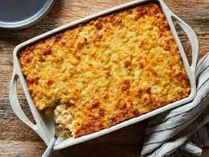

Macaroni

Marvelous Mouthwatering Macaroni
A rich and creamy macaroni dish. Packed with carbs to help power through the day.
Ingredients
- 1 (16 ounce) package elbow macaroni
- 4 tablespoons butter
- 4 tablespoons all-purpose flour
- 1 teaspoon salt
- 1 teaspoon dry mustard
- 3 1/2 cups milk
- 1 (8 ounce) package sharp white Cheddar cheese
- 1/2 (8 ounce) package processed cheese, cubed
- 1 cup bread crumbs
- 1 pinch paprika
Steps
- Preheat oven to 350 degrees F.
- Bring a large pot of lightly salted water to a boil.
Cook elbow macaroni in the boiling water, stirring
occasionally, for 6 minutes. Drain and set aside.
- Melt butter in a saucepan over medium heat. Remove from heat.
Stir in flour, salt, and dry mustard and mix well. return to
heat; pour in milk, stirring constantly until mixture is
simmering, thick, and smooth. Add white Cheddar cheese and
processed cheese; stir occasionally until melted.
- Pour macaroni into a large baking dish, followed by sauce.
Stir to combine. Top with bread crumbs. Sprinkle with paprika.
- Bake in preheated oven until bread crumbs are golden
brown and sauce is bubbly, 20 to 25 minutes.